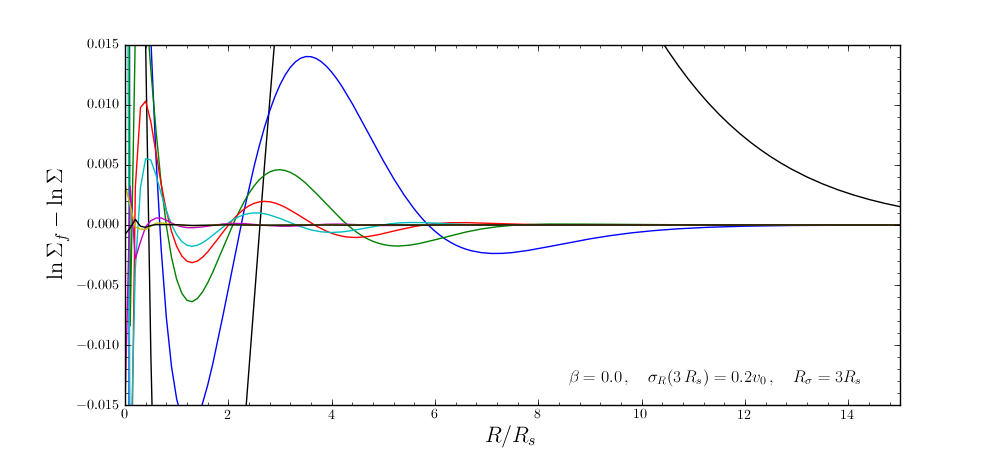
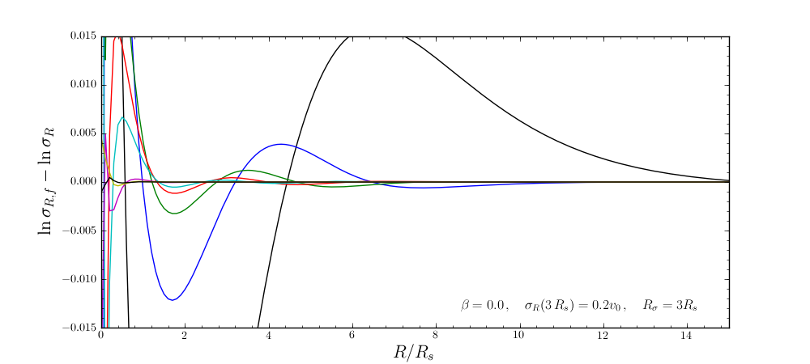

More on disk distribution functions¶
Calculating the surface-mass density and velocity dispersion profiles¶
For a disk distribution function (i.e., a dehnendf or a shudf object) we can calculate the resulting surface-mass density profile using surfacemass, sigma2, and sigma2surfacemass. The latter calculates the product of the velocity dispersion squared and the surface-mass density. E.g.,
>>> from galpy.df import dehnendf
>>> dfc= dehnendf(beta=0.)
>>> dfc.surfacemass(1.)
0.050820867101511534
We can plot the surface-mass density as follows
>>> Rs= numpy.linspace(0.01,5.,151)
>>> out= [dfc.surfacemass(r) for r in Rs]
>>> plot(Rs, out)

or
>>> plot(Rs,numpy.log(out))

which shows the exponential behavior expected for an exponential disk. We can compare this to the input surface-mass density
>>> input_out= [dfc.targetSurfacemass(r) for r in Rs]
>>> plot(Rs,numpy.log(input_out)-numpy.log(out))

which shows that there are significant differences between the desired surface-mass density and the actual surface-mass density. We can do the same for the velocity-dispersion profile
>>> out= [dfc.sigma2(r) for r in Rs]
>>> input_out= [dfc.targetSigma2(r) for r in Rs]
>>> plot(Rs,numpy.log(input_out)-numpy.log(out))
Using corrected disk distribution functions¶
As shown above, for a given surface-mass density and velocity dispersion profile, the disk distribution functions of Basic Usage: Disk distribution functions only do a poor job of reproducing the desired profiles. We can correct this by calculating a set of corrections to the input profiles such that the output profiles more closely resemble the desired profiles (see 1999AJ....118.1201D). galpy supports the calculation of these corrections, and comes with some pre-calculated corrections. For example, the following initializes a dehnendf with corrections up to 20th order (the default)
>>> dfc= dehnendf(beta=0.,correct=True)
The following figure shows the difference between the actual surface-mass density profile and the desired profile for 1, 2, 3, 4, 5, 10, 15, and 20 iterations
and the same for the velocity-dispersion profile
galpy will automatically save any new corrections that you calculate.
Example: The Hercules stream in the Solar neighborhood as a result of the Galactic bar¶
We can combine the orbit integration capabilities of galpy with the provided distribution functions and see the effect of the Galactic bar on stellar velocities. By backward integrating orbits starting at the Solar position in a potential that includes the Galactic bar we can evaluate what the velocity distribution is that we should see today if the Galactic bar stirred up a steady-state disk. For this we initialize a flat rotation curve potential and Dehnen’s bar potential
>>> from galpy.potential import LogarithmicHaloPotential, DehnenBarPotential
>>> lp= LogarithmicHaloPotential(normalize=1.)
>>> dp= DehnenBarPotential()
The Dehnen bar potential is initialized to start bar formation four bar periods before the present day and to have completely formed the bar two bar periods ago. We can integrate back to the time before bar-formation:
>>> ts= numpy.linspace(0,dp._tform,1000)
where dp._tform is the time of bar-formation (in the usual time-coordinates).
We initialize orbits on a grid in velocity space and integrate them
>>> ins=[[Orbit([1.,-0.7+1.4/100*jj,1.-0.6+1.2/100*ii,0.]) for jj in range(101)] for ii in range(101)]
>>> int=[[o.integrate(ts,[lp,dp]) for o in j] for j in ins]
We can then evaluate the weight of these orbits by assuming that the disk was in a steady-state before bar-formation with a Dehnen distribution function. We evaluate the Dehnen distribution function at dp._tform for each of the orbits
>>> dfc= dehnendf(beta=0.,correct=True)
>>> out= [[dfc(o(dp._tform)) for o in j] for j in ins]
>>> out= numpy.array(out)
This gives
>>> from galpy.util.bovy_plot import bovy_dens2d
>>> bovy_dens2d(out,origin='lower',cmap='gist_yarg',contours=True,xrange=[-0.7,0.7],yrange=[0.4,1.6],xlabel=r'$v_R$',ylabel=r'$v_T$')

For more information see 2000AJ....119..800D and 2010ApJ...725.1676B. Note that the x-axis in the Figure above is defined as minus the x-axis in these papers.